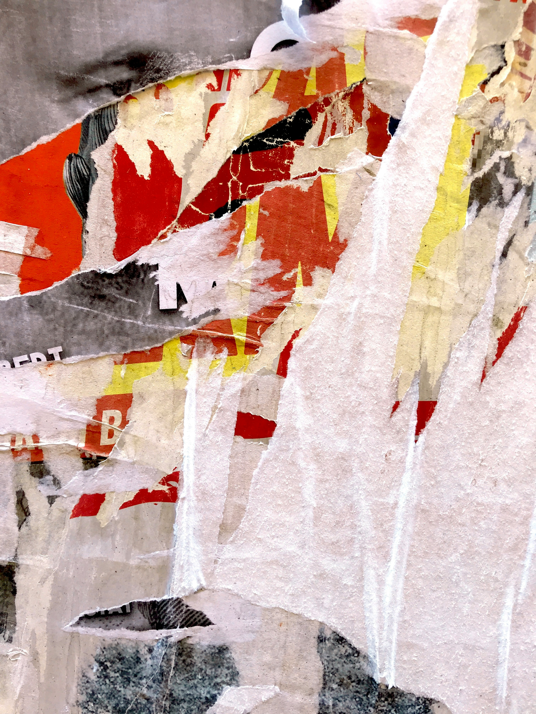
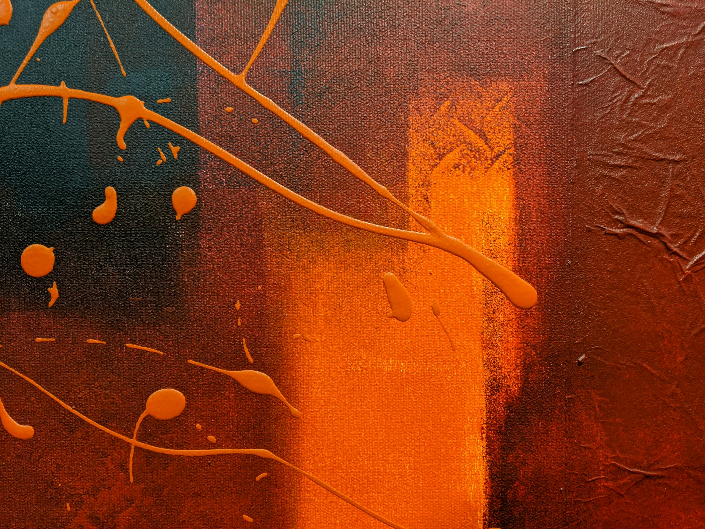
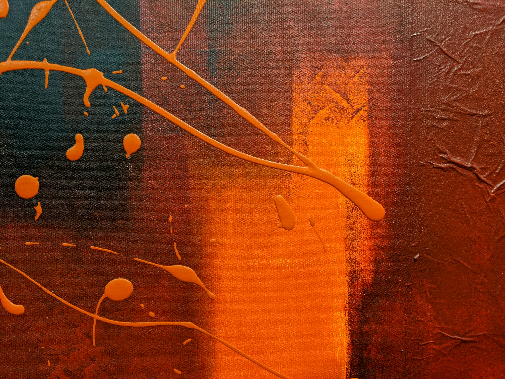
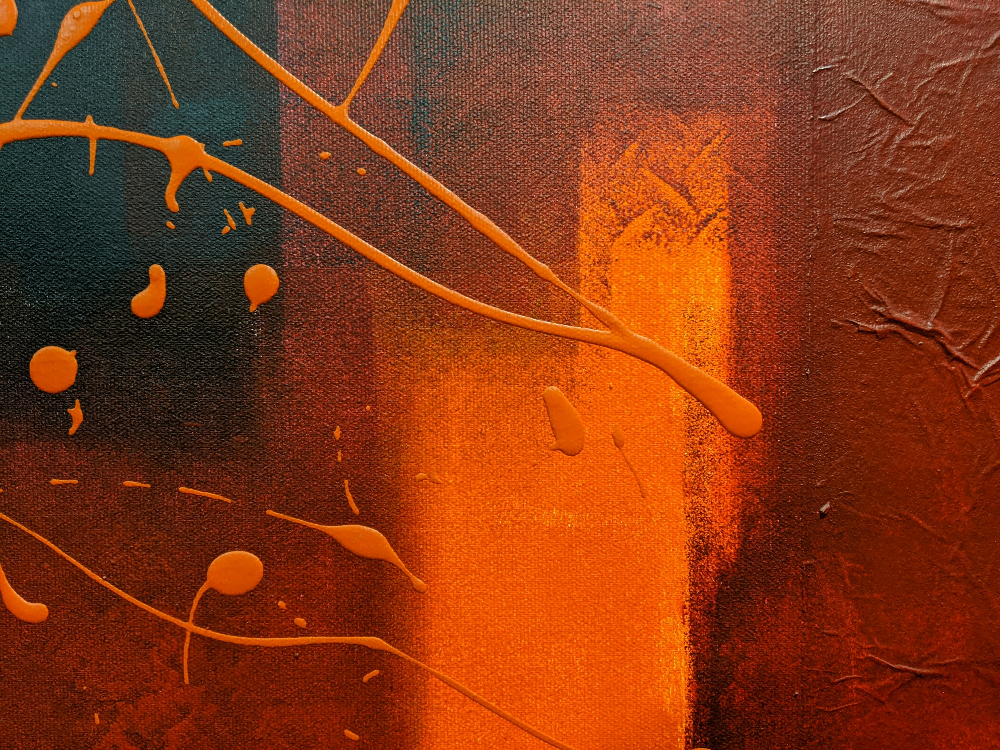
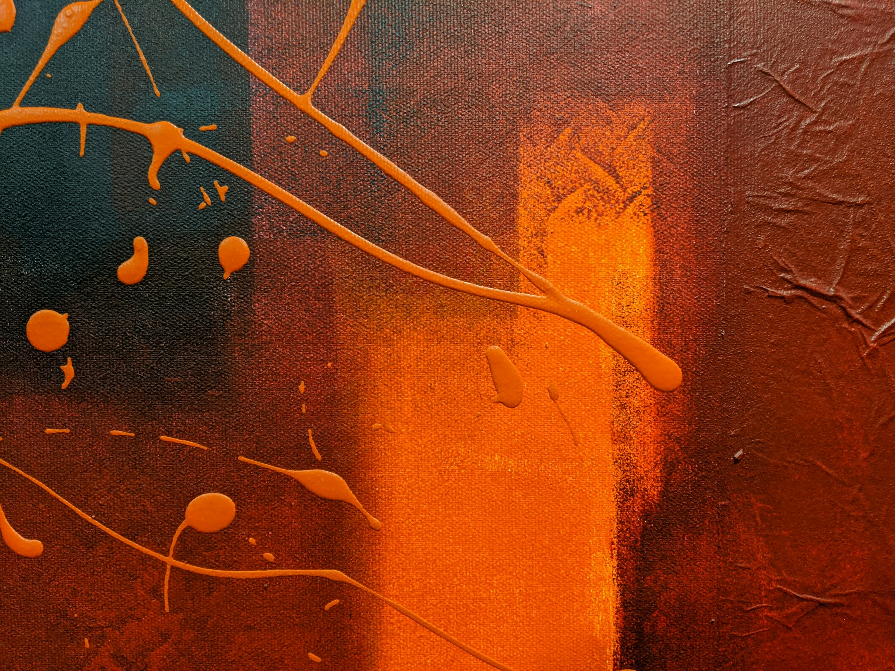

 



NDSU | Computer Science | Cybersecurity
Welcome to my personal portfolio website! Below is a little about me. Click on any of the buttons below or the page links in the navbar to see some of my other website pages!
View My Work!I am a student at North Dakota State University in my third year of college! While attending school, I am working to build up my resume with industry-recognized certifications and relevant field experience. While I am still exploring my career path, my main interests lie in Cybersecurity and Networking. I am exploring other options, though, such as software development and now web design!
More About Me!I have always been interested in technology and realized I wanted to go into this field in middle school. Since there weren’t many IT options available to me during that time, I started learning on my own until high school, where I gained a bunch of hands-on experience and even participated in competitions like Cybermadness. This competition, hosted by Bismarck State College, tested teams on cybersecurity trivia and practical skills!

After high school, I attended Bismarck State College while working as a Technology Specialist for Bismarck Public Schools. I studied Cybersecurity and Networking Systems, gaining both academic knowledge and practical skills. Although BSC offered a four-year degree in Cybersecurity, I decided to explore other fields such as Computer Science. This led me to transfer to North Dakota State University for the Fall 2024 semester to broaden my knowledge and experience in software development.
Transferring to NDSU and moving to Fargo, ND, was a big change, but an exciting one and definitely a good decision! I quickly noticed the difference in campus size, the larger student community, and the increased class difficulty. I am very happy with my decision, though, because software development is a very fun and interesting field to be learning about.
If my story intrigues you at all, you can click the button below to get into contact with me for whatever reason: questions, job offers, or even just to chat!
Contact Me!